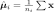
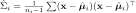
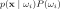
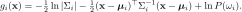
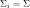
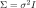

and covariance
and covariance  : quadratic boundaries that account for spread and correlation of each class.
: quadratic boundaries that account for spread and correlation of each class.Construction
Training:

,
. Taking the log of
and dropping constants:

→ linear boundaries (Mahalanobis minimum distance);
and equal priors → Euclidean minimum distance. A threshold on the Mahalanobis distance rejects pixels unlike any class.Example
from scipy.stats import multivariate_normal
def fit(c):
Xc = F_train[y_train == c]
return multivariate_normal(Xc.mean(0), np.cov(Xc.T))
models = [fit(c) for c in classes]
logp = np.stack([m.logpdf(F) + np.log(prior[c])
for c, m in zip(classes, models)], 1)
labels = classes[logp.argmax(1)]Intuition
Each class is an ellipsoid of probability; a pixel joins the class in whose ellipsoid it sits most comfortably, given how big and how tilted each one is.
Pitfall
 has
has  parameters: with hyperspectral data and a few dozen training pixels it is singular or unstable — regularise, reduce dimensionality, or use non-parametric classifiers.
parameters: with hyperspectral data and a few dozen training pixels it is singular or unstable — regularise, reduce dimensionality, or use non-parametric classifiers.